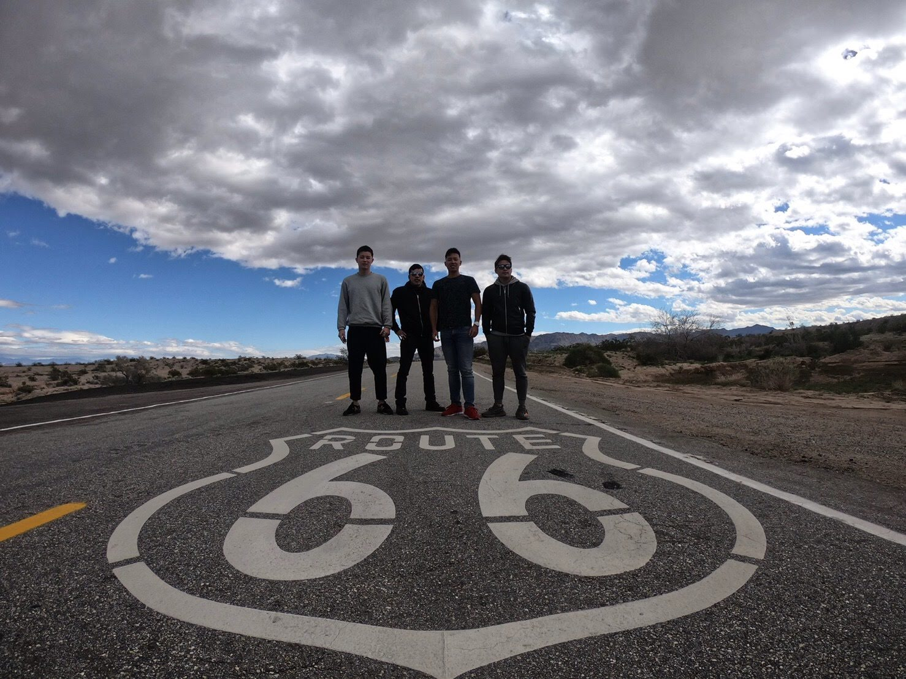
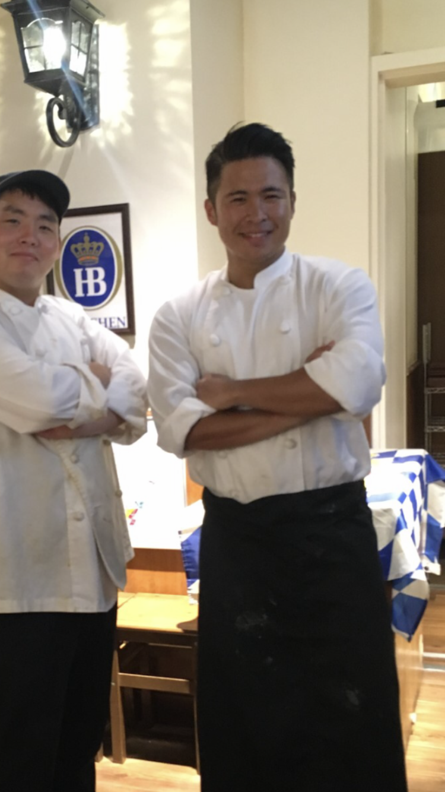
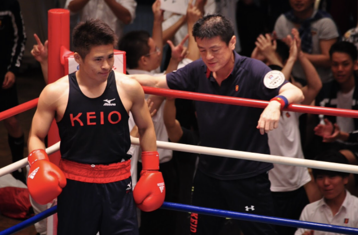

1年目の森瑞季です！調べ調べ自分のサイトを作ってみます！
私は福島県で生まれました。5人兄弟の3男です。その後大学から東京に来て部活に趣味に打ち込む毎日でした。十分遊んだので社会人は徹底的に仕事に打ち込みたいと考えています。
趣味は旅行です。4年生のころは東南アジアからアメリカ、ヨーロッパなど様々な国を旅しました。友人とROUTE66行った時の写真を貼ります。 （本当は筋トレとか二郎とかのほうが好きですがちょうど良い写真があ りませんでした,,,,今後はアマゾン内にあるエアソフクラブに入ってサバゲーをやってみたいです。）
多くのバイトをしました。トータル10個くらいした気がします。ホテルの皿洗いから土方、コールセンターまで幅広く経験しました。写真は最後に働いていたツムビアホフというドイツ料理屋さんです。ビールが好きなら是非立ち寄ってください！
大学ではボクシング部で活動しました。最後のリーグ戦は自分がキャプテンとして92年ぶりの準優勝を果たすことができました。その時の最後の写真を貼ります。
